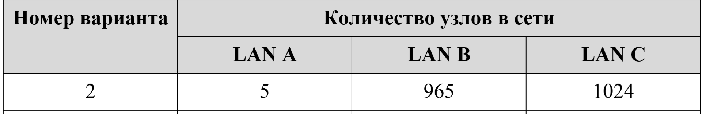
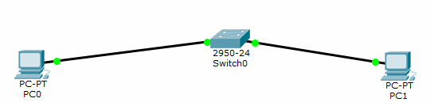

"РАЗРАБОТКА ПРОСТОГО ВЕБ-ПРИЛОЖЕНИЯ"
Цель: Проектирование и разработка индивидуального или коллективного веб-приложения с использованием html,css,js + json,xml.
Калькулятор
"НАСТРОЙКА ЛОКАЛЬНОЙ СЕТИ ПЕРЕДАЧИ ДАННЫХ"
Цель работы: настройка коммутаторов и маршрутизаторов.
Задание на лабораторную работу
- Разместить на рабочем поле коммутатор и два компьютера и соединить их
- Подключить консольный кабель для настройки оборудования
- Настроить адресацию на добавленных компьютерах согласно таблице ниже без шлюза по умолчанию
- Выполнить проверку работоспособности сети
- Добавить на рабочее поле еще один коммутатор с двумя компьютерами и настроить адресацию из другой подсети
- Соединить коммутаторы между собой и проверить работоспособность сети
- Добавить маршрутизатор на рабочее поле
- Настроить интерфейсы маршрутизатора для существующих подсетей
- Проверить работоспособность сети
- Указать шлюз по умолчанию и отправить сообщение
- Добавить на рабочее поле еще один маршрутизатор
- Подключить к нему коммутатор и компьютер
- Настроить сетевые настройки согласно таблице ниже
- Соединить между маршрутизаторы и настроить между ними сеть с префиксом /30
- Проверить работоспособность сети, отправив сообщение сети A в сеть С и из сети В в сеть С
- Настроить статическую маршрутизацию между сетями
- Настроить на сетевых устройствах пароли для привилегированного режима
- Настроить пароли на сетевых устройствах пароли на подключение через консоль и telnet
- Установить баннер на сетевое оборудование
- Проверить работу удаленного подключения
Ход работы
- Рассчитаем IP-адреса согласно выбранному варианту

- Разместим два компьютера и коммутатор,настроить между ними адресацию. Убедимся, что все работает

- Добавим еще коммутатор с двумя компьютерами и маршрутизаторы. Проведем необходимые настройки и проверим работоспособность

- Настроим статическую маршрутизацию
- Установим банер на сетевое оборудование:
- Проверим работу.
ВЫВОД
Все задачи, поставленные в лабораторной работе, выполнены.